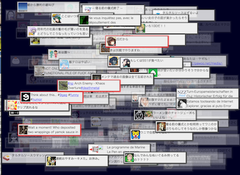
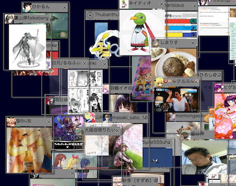

mastodonクライアント実験
mastodonのタイムラインを色々な方法で表現する実験ページです。last update:2017/05/14
想定ブラウザは、Chrome,firefox,safari(mac/ios),Edgeです。IE11は非対応。モバイルで動くのもあれば動かないのもあります。
以下の実験ページのアクセスは、mastodonのインスタンス毎の認証が必要です。
このページのGithubリポジトリ
インスタンス認証
host:
※認証はreadのみで行われるので、以下のページで自動的にtootoすることはありません。
認証済みインスタンス
(選択されているインスタンスのタイムラインが以下のページに出ます)
以下のページはブラウザのみで動作し、サーバサイドのスクリプトはありません。認証で取得されたaccess tokenは、ブラウザのlocal storageにのみ保存され、対象のサーバ以外に送信されることはありません。
また認証はmastodonの設定の「認証済みアプリ」の所に"mstdn_wakufactory"として登録され、いつでも無効化できます。
実験ページ一覧
- mastodon APIを呼んでみるテスト
- streaming APIを呼んでみるテスト
- ストリームTL実験その一。ランダム表示
- ストリームTL実験その2。アカウントのIDから位置決め
- ストリームTL実験その3。画像サムネ表示。アイコンクリックで開く
- 画像TLその1 ランダムに500枚まで敷き詰め。クリックでその人のホーム
- 画像TLその2 マウスで移動できるように。アイコンクリックでホーム開く。200枚まで。
- ストリームTL実験その4。表示数を500まで絞る。
- ストリームTL実験その5。音をつけてみた1 ランダムTL(音が出ます)
- ストリームTL実験その6。音をつけてみた2 普通のスクロールTL (音が出ます)
- ストリームTL実験その7。音をつけてみた3 普通のスクロールTL 音程をchromaticに。ツイート文字数に応じて長さを変更。 (音が出ます)
- ストリームTL実験その8。音声をつけてみた1 (音が出ます)speech synthesysがサポートされている環境で喋るよ。クリックしたのを優先的に。
- ストリームTL実験その9。音声をつけてみた2 (音が出ます)インスタンスやlocal/publicの選択と、パラメータをいじれるようにしたよ。
wakufactory@mstdn.jp wakufactory@twitter